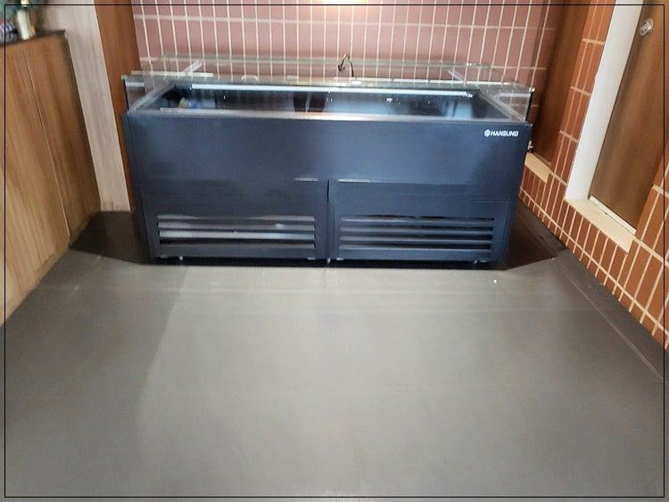
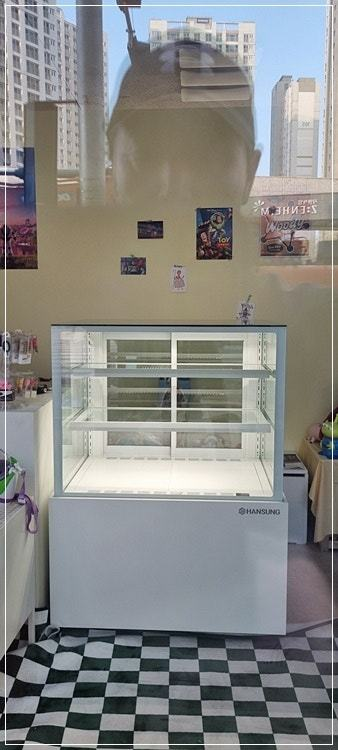

한성제품
냉장쇼케이스 업체, 견적서만 보지 말고 확인할 여섯 가지

냉장쇼케이스 업체는 직접 만드는 곳인지, 현장을 보고 치수를 재는지, 색·프레임·유리·조명을 얼마나 고를 수 있는지, 실물 샘플을 볼 수 있는지, 설치와 A/S를 누가 맡는지로 비교하시면 됩니다. 이 조건이 다르면 같은 금액이라도 받게 되는 결과물이 전혀 다릅니다.
안녕하세요. 업종과 매장에 맞춰 냉장쇼케이스를 직접 제작하고 설치하는 한성쇼케이스입니다.
창업을 준비하면서 냉장쇼케이스 견적을 여러 곳에서 받아 보면 금액도, 적힌 내용도 제각각입니다. 어떤 곳은 크기와 금액만 한 줄로 적혀 있고, 어떤 곳은 옵션이 길게 나열돼 있어 무엇을 기준으로 비교해야 할지 막막하시죠.
냉장쇼케이스는 매일 쉬지 않고 돌아가며 매장 분위기까지 책임지는 장비라, 업체를 고르는 일은 사실상 몇 년 동안 함께할 파트너를 고르는 일에 가깝습니다.
오늘은 냉장쇼케이스 업체를 비교할 때 견적 금액 외에 꼭 확인해야 할 기준과, 상담 때 물어보면 좋은 질문을 정리해 드리겠습니다.
1. 직접 만드는 곳인지, 파는 곳인지
쇼케이스 업체는 크게 직접 공장을 운영하며 만드는 곳과, 다른 곳에서 만든 제품을 받아 파는 곳으로 나뉩니다.
직접 제조하는 곳은 크기와 구성을 바꾸는 맞춤 요청에 바로 답할 수 있고, 중간 유통 단계가 줄어드는 만큼 비용 구조도 단순해집니다.
판매만 하는 곳이라면 맞춤 요청이 제조사까지 전달되는 데 시간이 걸리고, 바꿀 수 있는 범위도 좁을 수 있습니다.
상담 때 공장이 어디에 있는지, 방문해서 볼 수 있는지 물어보시면 금방 구분됩니다.
- 공장 위치와 방문 가능 여부를 물어보세요.
- 맞춤 가능한 범위를 구체적으로 물어보세요.
2. 현장을 보고 치수를 재는지
도면만 받고 제작하는 업체도 있지만, 실제 매장은 기둥 위치나 바닥 높이, 전기 위치가 도면과 다른 경우가 꽤 있습니다.
현장에 와서 치수를 재고 동선을 함께 보는 업체라면 설치 당일 문제가 생길 가능성이 줄어듭니다.
샌드위치쇼케이스를 맞추신 한 카페는 담당자가 직접 현장에 가서 사이즈를 확인하고 필요한 기능을 들은 뒤, 컬러와 프레임 소재, 유리 옵션을 사장님이 직접 고르도록 진행했습니다.
반듯하고 차분한 분위기를 원하셔서 블랙 프레임으로 정해졌죠. 이런 과정이 있는지가 업체 간 차이를 만듭니다.


3. 고를 수 있는 옵션의 폭
같은 냉장쇼케이스라도 프레임 색, 유리 형태, 조명 색, 단 높이, 문 방향을 고를 수 있느냐에 따라 매장에 어울리는 정도가 달라집니다.
견적서에 이 항목이 하나하나 적혀 있는지 확인하시고, 빠진 항목은 기본으로 무엇이 들어가는지 물어보세요.
실물 샘플을 직접 볼 수 있다면 더 좋습니다. 사진으로는 조명 색이나 마감 품질, 문이 닫히는 느낌을 알기 어렵기 때문입니다.
4. 설치와 A/S를 누가 맡는지
제작한 곳이 직접 시공까지 하는지, 외부 업체에 맡기는지도 확인해 보세요. 만든 곳에서 설치까지 하면 현장에서 생긴 작은 문제도 바로 조정할 수 있습니다.
A/S는 고장이 났을 때 어디로 연락하고, 누가 와서 고치는지가 핵심입니다. 지방 매장이라면 가까운 지역에 서비스가 가능한지, 무상 A/S 기간과 범위가 어떻게 되는지 계약 전에 꼭 들어 두세요.
- 설치를 직접 하는지 물어보세요.
- A/S 접수 방법과 무상 기간을 확인하세요.
- 우리 지역 서비스 가능 여부를 확인하세요.
체크리스트
- 직접 제조 여부와 공장 방문
- 현장 실측과 동선 확인
- 프레임·유리·조명·단 옵션
- 실물 샘플 확인
- 직접 시공 여부
- A/S 접수 방법과 지역 대응
현장에서 자주 보는 경우: 견적에 놀라 맞춤 제작을 포기하려는 1인 창업자
공간을 알뜰하게 써야 하는 1인 창업자분들은 매장에 꼭 맞는 냉장쇼케이스가 필요하면서도, 맞춤 제작은 비싸다는 생각에 문의 단계에서 망설이시는 경우가 많습니다.
실제로 여러 곳에 견적을 받다가 금액 차이에 놀라 다시 기성품을 찾아보시기도 하죠.
이럴 때 비교해 보셔야 할 것이 업체의 구조입니다. 직접 제조 공장을 두고 중간 유통 없이 공장과 고객이 바로 거래하며, 시공까지 직접 하는 곳은 비용 거품을 줄이기 쉽습니다.
제작 전에 공장에서 여러 샘플을 실물로 보고, 1:1 상담으로 사이즈와 디자인을 정한 뒤 진행하면 결과물에 대한 걱정도 덜 수 있습니다.



자주 묻는 질문
견적서에서 꼭 적혀 있어야 할 항목은 무엇인가요?
규격, 냉각 방식, 프레임 색과 소재, 유리 형태, 조명 색, 단 구성, 설치 포함 여부, 무상 A/S 기간은 적혀 있는 것이 좋습니다.
빠진 항목은 기본 사양이 무엇인지 꼭 확인하세요.
여러 업종 경험이 있는 업체가 좋은가요?
편의점, 디저트, 정육, 꽃 진열장처럼 여러 업종을 만들어 본 곳은 업종별로 필요한 조건을 잘 알고 제안해 줄 수 있습니다.
우리 업종 납품 사례를 보여 달라고 요청해 보세요.
한성쇼케이스 공장에 방문할 수 있나요?
방문하시면 다양한 샘플을 직접 보고 상담받으실 수 있습니다. 대표전화 031-986-2458로 일정을 잡아 주세요.
매장 조건에 맞춰 만드는 한성쇼케이스
원하시는 제품 사진과 설치할 공간 사진만 보내 주셔도 매장에 맞는 구성을 추천해 드립니다.
- 전국 240여 개 A/S 전담 센터 운영
- 본사 대량 자재 매입으로 품질 대비 합리적인 가격
- 유럽제·삼성 냉각 콤프레셔 적용
- 국내 최초 쇼케이스 전문 디자이너 상주
매장 폭과 원하는 진열 구성을 알려 주세요. 실측과 견적을 안내해 드립니다.
031-986-2458